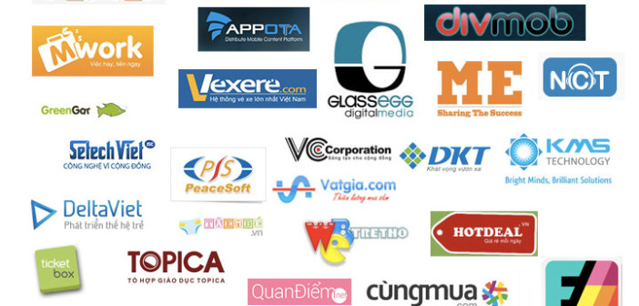
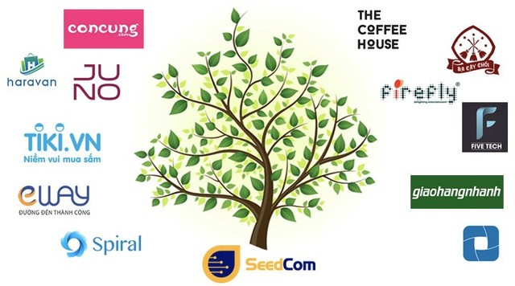
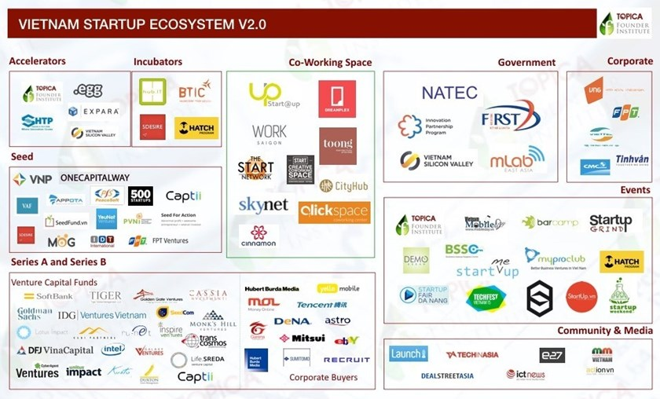

Start Up
Website học liệu: link
Start UP- Sinh viên- học viên Đại học Bách Khoa sao lại không?
Để tạo điều kiện thuận lợi cho sinh viên - học viên nghiên cứu các đồ án GR1, GR2, GR3 đồ án các hệ tiếng Nhật, tiếng Anh hệ ICT, KS tài năng, KS chất lượng cao và KS, CN chính qui, KS SIE các em có thể tham gia thực tập tại các doanh nghiệp mong muốn. Đồng thời, các em có thể kết nối nghiên cứu theo chuỗi ý tưởng Start-UP. Khi có câu hỏi nghiên cứu hay ý tưởng Start-UP cần thắc mắc hay nguyện vọng nghiên cứu, các em gửi email haipv@soict.hust.edu.vn; Trong vòng 2 ngày, các em sẽ nhận được email phản hồi. Các em có thể tự đề xuất ý tưởng nghiên cứu của mình hoặc tham khảo danh sách chủ đề nghiên cứu gợi ý. Tùy theo năng lực học tập của sinh viên - học viên, thầy sẽ định hướng tốt nhất phù hợp với kết quả và nguyện vọng đầu ra.
DANH SÁCH CÁC START UP THÀNH CÔNG, TRONG ĐÓ SỐ RẤT NHIỀU CỰU SINH VIÊN ĐẠI HỌC BACH KHOA HÀ NỘI


HỌC ĐỂ PHÁT TRIỂN XÂY DỰNG CÁC DỰ ÁN PHẦN MỀM, CƠ SỞ DỮ LIỆU VÀ HỆ THỐNG LỚN theo xu hướng SMAC là mọi cấu thành trong nó kết hợp chặt chẽ với nhau và tạo thành một hệ sinh thái. SMAC là từ viết tắt của Social (Xã hội), Mobile (Di động), Analytics (Phân tích, dựa trên Dữ liệu lớn) và Cloud (Đám mây). Các Start-UP đều nghiên cứu dựa trên nền tảng thông minh công nghệ SMAC và IOT

CÁC CỰU SINH VIÊN HỆ THỐNG THÔNG TIN VỚI START UP THÀNH CÔNG - DOANH NHÂN - NHÀ KHOA HỌC THÀNH ĐẠT


Website học liệu http://ritsumei.academia.edu/HaiVPham
Address in Vietnam
Information systems Dept. School of Information Technology and Communication
B1 Building
No 1. Dai Co Viet, Hanoi, Vietnam
Address in JAPAN
Soft Intelligence Laboratory, Graduate of Science and Engineering
Dept. of Human and Computer Intelligence
Ritsumeikan University, JAPAN, 1-1-1 Noji-higashi, Kusatsu, Shiga, 525-8577 Japan